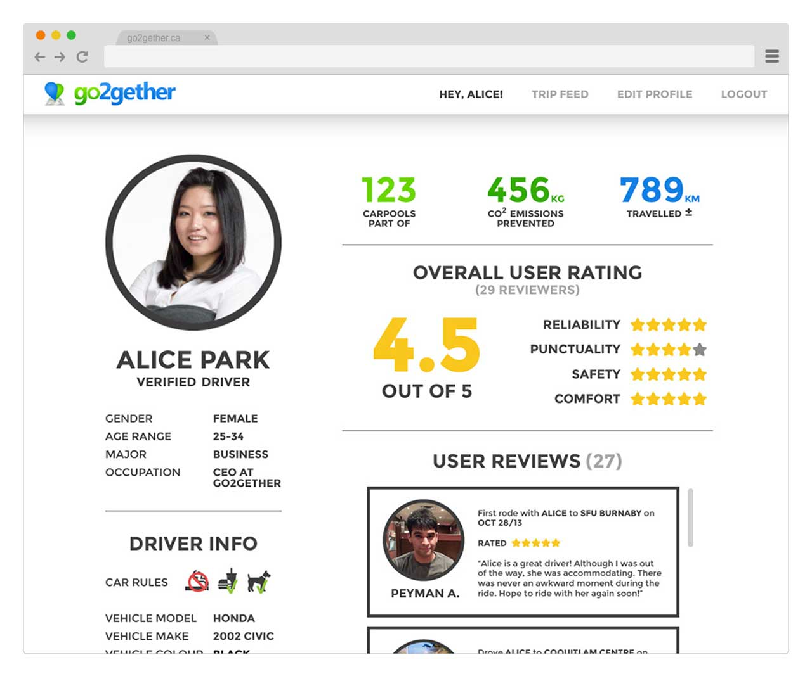
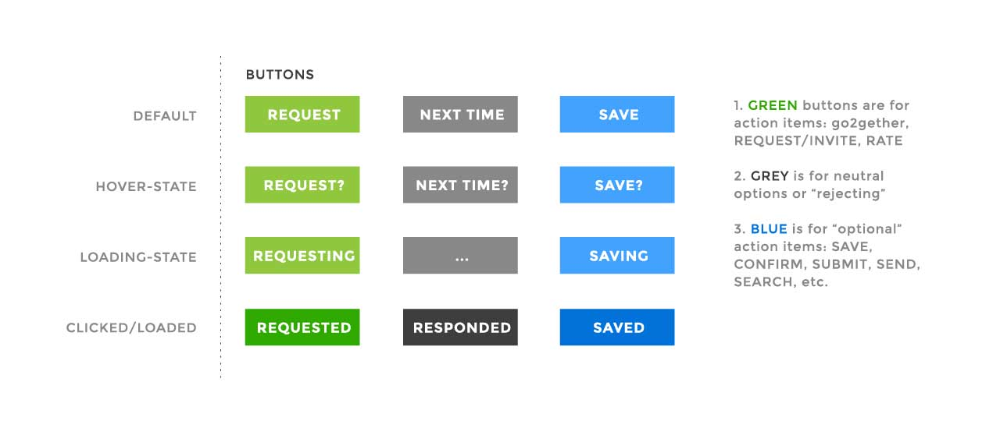
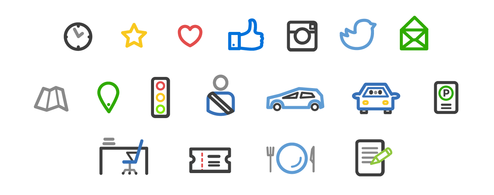
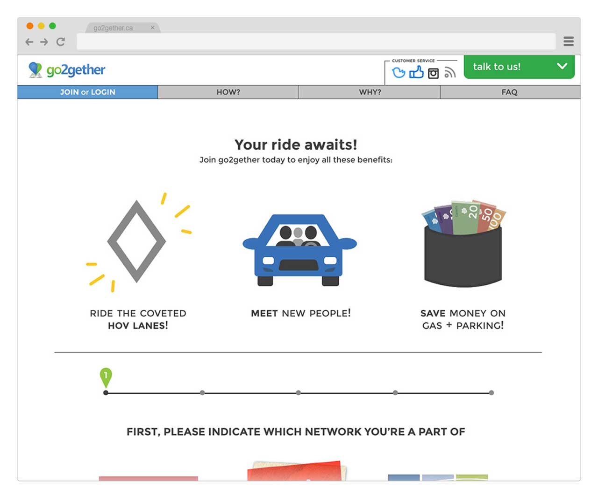
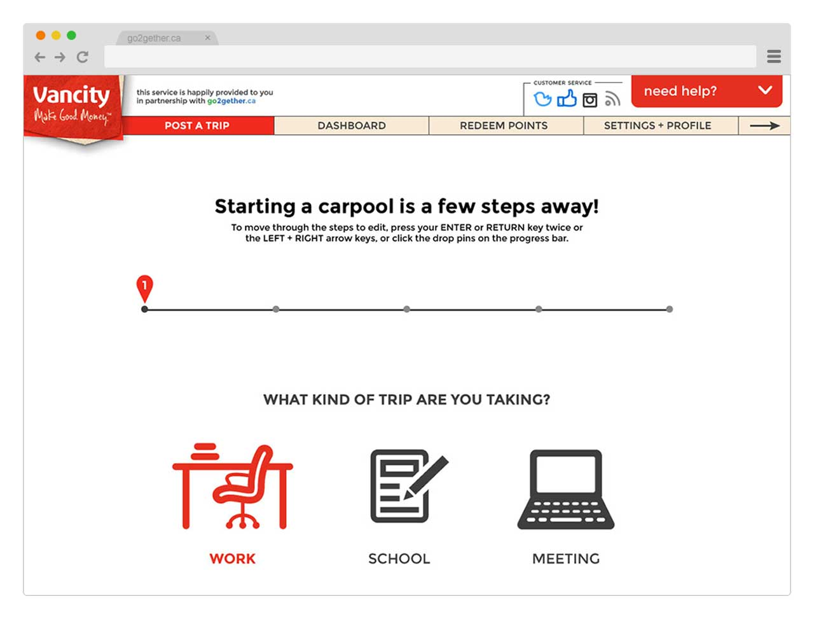
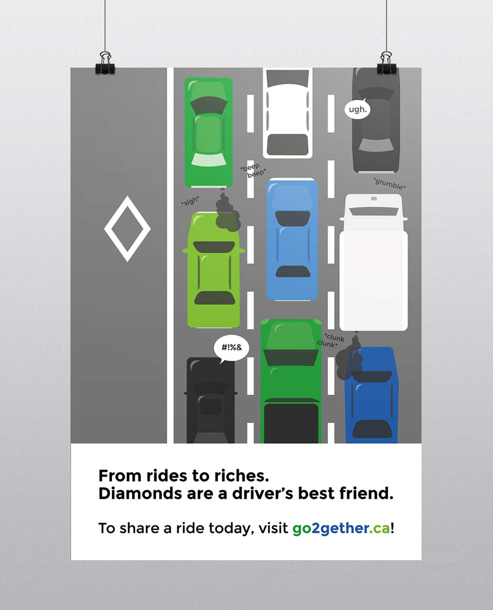
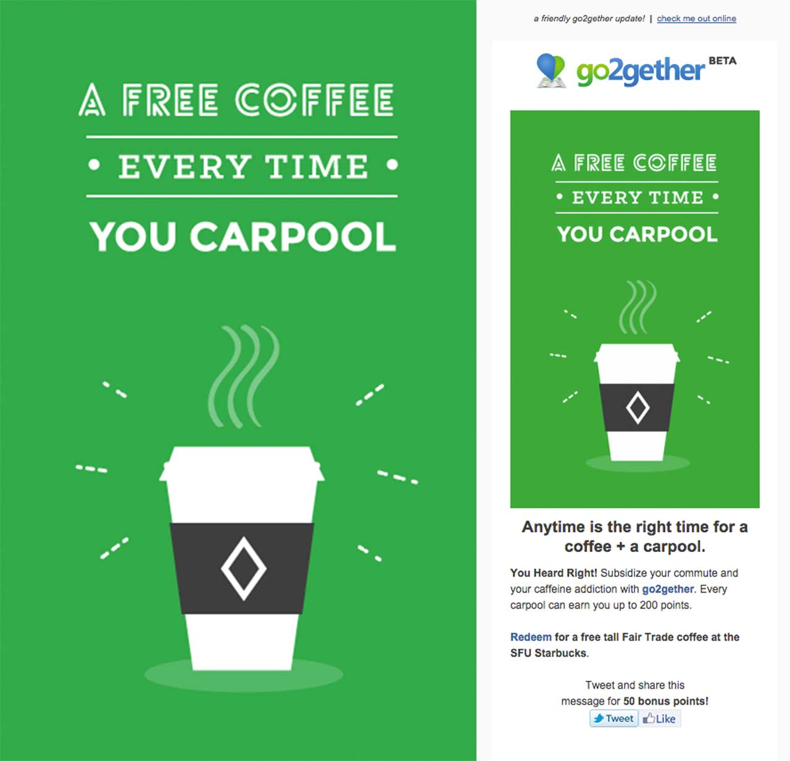

Sketching, wireframing and designing mockups was a never-ending part of the job. I've created six interactive prototypes with Marvel + Balsamiq, burned through five sketchbooks and toiled over four different visual iterations of the entire system as go2gether's UX/UI Designer. Above are some examples of wireframes of the homepage. Below is an example of the visual progression of the 'post a trip' function.
Prior to designing all these different pages and functions, I needed to understand what factors would make or break a person to ride-share with other strangers. So I conducted guerilla interviews with drivers so I can develop empathy for their needs and behaviours.
As a result of the interviews, it was consistently said throughout that safety and trust were the main concerns for most drivers. Therefore, we implemented member profiles and a rate-and-review system so that carpoolers could familiarize themselves with someone beyond a name.
A basic pattern library was crafted for go2gether. The sample above shows the use of colours as signifiers for actions to guide users through our system. Below demonstrates feedback given to a user when a button is interacted with as well as the iconography.
 As our member base grew, so did the clients who wanted to get in on the go2gether action. I modified the default system and helped develop pattern libraries for client customization to merge both our service and a client's brand in a seamless way. Below is an example of a user wanting to post a trip and how it transitions from the default go2gether branding to Vancity branding.
 Out first major client was Simon Fraser University (my alma mater). I was tasked in designing posters and banners that would be plastered around campus. The following is just one notable example of a poster I made in which I was both illustrator and copywriter for.
I also created graphical assets for our email newsletter for seasonal promotions, as well as illustrations for other aspects of the website.
CBC, The Georgia Straight, The Huffington Post, News1130
UX/UI Designer, User Researcher, Brand Development, Coded Email Templates, Graphic Designer, Artworker
Branding (with a holistic approach), Sitemapping, Heuristic Evaluation, Guerilla Interviews, Journey Frameworks, Usability Testing, A/B Testing, Sketching, Wireframing, Prototyping, Iconography, Illustration, HTML/CSS, Collaboration with Developers + Business People
Madelyn Jones, Alice Park, Elliott Ro